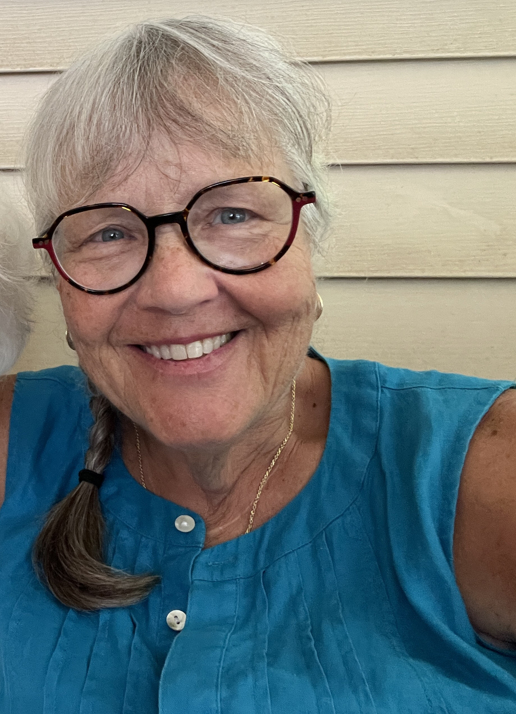

Serving Franklin & Licking Counties, Ohio
Compassionate, non-medical support for families navigating the end of life — with presence, dignity, and deep care.
INELDA-Trained · End-of-Life Midwife · Columbus, Ohio Area
What is an End-of-Life Midwife?
Just as a birth midwife guides new life into the world, an end-of-life midwife walks alongside those who are dying — and the families who love them — with steady, compassionate presence.
This role is sometimes called a death doula, but the term end-of-life midwife better captures the nurturing, guiding nature of the work. It is not medical care. It is human care — presence, education, legacy, and peace.
An end-of-life midwife works alongside hospice teams and medical providers. Where they address the clinical, Pat addresses the emotional, spiritual, and practical needs of the whole family.
"Dying is as sacred as being born. No one should have to do either alone."
How I Can Help
Every family's journey is different. Pat meets you where you are — whether weeks before or in the final hours.
Pat can be present during the active dying process, providing calm support for both the dying person and the family. No one should die alone — and no family should have to stand by in fear and confusion. Pat helps everyone feel held.
Help document stories, letters, and memories that will live on for generations. Legacy projects can include recorded conversations, written letters to loved ones, memory books, or other meaningful keepsakes — tailored entirely to your family.
Helping individuals and families have the important conversations — about wishes, values, and care decisions — before a crisis makes them harder. Pat guides these talks with gentleness, clarity, and no judgment.
What happens as someone is dying? What do we say? What do we do? Pat helps families understand the dying process, know what to expect, and feel prepared — so fear is replaced with understanding, and uncertainty with presence.

About Pat
After 40 years attending births as a midwife, Pat Dodge now attends deaths. The work is not so different — both are sacred thresholds, and both deserve a steady, loving presence.
Pat is based in Granville, Ohio and serves families across Franklin and Licking Counties. She is trained by the International End-of-Life Doula Association (INELDA) — one of the most respected training organizations in this growing field.
Her work is rooted in the conviction that every person deserves a meaningful end of life, and every family deserves support in finding their way through it — without having to figure it all out alone.
Granville, Ohio · Serving Franklin & Licking Counties
Where I Serve
Pat serves families across central Ohio, with a focus on the Columbus metro and surrounding communities in two counties.
Columbus · Westerville · Dublin
Grove City · Hilliard · Gahanna
Grandview Heights · Bexley
Upper Arlington · Reynoldsburg
Worthington · New Albany · Powell
Pickerington · Canal Winchester
Whitehall · Groveport
Granville · Newark · Heath
Pataskala · Hebron · Johnstown
Etna · Alexandria · Hanover
Buckeye Lake · Utica · Centerburg
and surrounding areas
Not sure if you're in range? Reach out — Pat will do her best to help.
Common Questions
You may have never heard of an end-of-life midwife before. That's okay — here are answers to the questions Pat hears most.
What is an end-of-life midwife?
An end-of-life midwife provides non-medical, holistic support to dying individuals and their families. Just as a birth midwife supports new life, an end-of-life midwife guides and supports families through the dying process — offering presence, education, legacy work, and emotional support.
How is an end-of-life midwife different from a death doula?
An end-of-life midwife and a death doula provide very similar services. The term "end-of-life midwife" emphasizes the caregiving, nurturing role — similar to how a midwife guides someone through birth — while honoring the sacred nature of the dying process.
How is an end-of-life midwife different from hospice?
Hospice provides medical and clinical care near the end of life. An end-of-life midwife offers non-medical support — emotional presence, family education, legacy projects, and advance care planning conversations — and works beautifully alongside a hospice team. The two complement each other.
When should I contact an end-of-life midwife?
The earlier the better — but there is no wrong time. Pat can be involved months before a death, helping with advance care planning and legacy projects, or she can be called in during the final days or hours. Reaching out is always the right move.
What does INELDA training mean?
INELDA stands for the International End-of-Life Doula Association. It is one of the leading training organizations for end-of-life doulas and midwives, providing rigorous education in compassionate, whole-person care. Pat's INELDA training reflects her deep commitment to this work.
Does Pat Dodge serve the Columbus, Ohio area?
Yes. Pat serves all of Franklin County — including Columbus, Westerville, Dublin, Grove City, Hilliard, Grandview Heights, Bexley, Upper Arlington, Worthington, New Albany, Powell, Reynoldsburg, Pickerington, and more — as well as all of Licking County, including Granville, Newark, Heath, Pataskala, Hebron, Johnstown, and surrounding areas. If you're unsure whether your location is covered, just call or text.
Is there a death doula or end-of-life midwife near Granville, Ohio?
Yes — Pat Dodge is based in Granville, Ohio and serves all of Licking County and Franklin County. She is one of the few INELDA-trained end-of-life midwives serving the Granville, Newark, and central Ohio area.
Is there a death doula in Licking County, Ohio?
Yes. Pat Dodge serves all of Licking County, including Granville, Newark, Heath, Pataskala, Hebron, Johnstown, Buckeye Lake, and surrounding communities. She is INELDA-trained and available for bedside vigil, legacy work, advance care planning, and family support.
Can an end-of-life midwife help if my loved one is in a nursing home or care facility?
Yes. Pat can provide support wherever your loved one is — at home, in a hospital, a nursing home, an assisted living facility, or a hospice house. The location doesn't change the need for human presence and family support.
Do you work alongside hospice?
Absolutely. Pat's role complements hospice beautifully. Hospice manages medical care and pain management. Pat focuses on the emotional, spiritual, and relational needs of the family — the things hospice teams often don't have time for. Most hospice teams welcome the support.
What if my loved one's death was unexpected or sudden?
Pat can also support families after a sudden or unexpected death — helping process grief, create meaning, and navigate the immediate aftermath. End-of-life support is not limited to terminal illness.
How much does an end-of-life midwife cost?
Pat offers flexible pricing to fit different family situations. She believes cost should never be the reason a family goes without support. Contact her directly for a free, no-pressure conversation about what makes sense for your family.
What is the difference between an end-of-life midwife and a death midwife?
The terms are used interchangeably. Both describe a non-medical guide and companion for the dying process — someone who brings the same nurturing, informed presence to death that a birth midwife brings to birth.
My family member just received a terminal diagnosis. Where do I start?
Start by reaching out to Pat. A diagnosis is overwhelming, and you don't have to figure out the next steps alone. Pat can help you understand what lies ahead, have the hard conversations, and make a plan that honors your loved one's wishes — at whatever pace feels right.
Get in Touch
There are no wrong questions. If you're wondering whether this is the right support for your family, the first conversation is free, low-pressure, and completely confidential.
Pat typically responds within 24 hours. For urgent needs, please call or text.